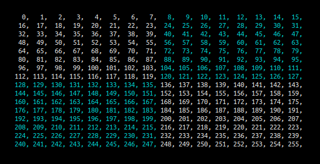

[wip] walking through a gotoBLAS/BLIS 8x8 sgemm kernel
for a general introduction into sgemms, check out this and this. Note this is not official gotoBLAS/BLIS code. It is an 8x8 AVX256 implementation of their paper. All examples are running on ubuntu 22.04.3 and compiled with g++ 11.4.0
we define the following type as wrapper over AVX registers in order to access specific floats:
typedef union {
__m256 v;
float f[8];
} m256_t;sgemm function
we take in templates mb, kb as the block sizes, th number of threads, m rows of a, n columns of b and k shared size. We also take in arguments a and b as the matrices to be multiplied, c as the matrix to be populated and lda, ldb, ldc as the stride length of their respective matrices.
template <int mb, int kb, int th, int m, int n, int k>
void sgemm(float* a, float* b, float* c, int lda, int ldb, int ldc) {
// . . .
}
one of the main bottlenecks we encounter is memory bandwidth. Modern CPUs have 3 levels of sRAM, L1, L2, L3, dRAM and then disk. Memory access speeds slow down as you go down the chain and memory size shrinks as you go up. On my CPU, a Ryzen 3900X :
- L1 data cache latency is 4-5 cycles with a size of 32kB per core, translating to ~8000 f32's per core, total of ~96.000.
- L2 cache latency is ~12 cycles with a size of 512kB per core, translating to ~128.000 f32's per core, total of ~1.536.000
- L3 cache latency is ~47 cycles with a total shared size of 64MB, translating to ~16.384.000 f32
- dRAM is 47 cycles + 74ns with variable size, i have 128GB.
find cache info with cpuid
in order to find cpu cache information, you can execute a cpuid instruction with eax set to 0x1, 0x2 on intel, and 0x800000005, 0x800000006 on amd. read more about it here or read the working example in tensorlib. to call it use inline assembly:
void _cpuid(long int op, uint32_t& eax, uint32_t& ebx,
uint32_t& ecx, uint32_t& edx) {
asm volatile (
"cpuid"
: "=a"(eax), "=b"(ebx), "=c"(ecx), "=d"(edx)
: "a"(op)
: "cc"
);
}
the first step is to divide the big matrices into sub-matrices of a given block size that can fit into smaller, faster memory. In the BLIS paper, the authors aim to keep b into L3 and a mainly in L2. Given our sRAM sizes, this does not become a problem until the mats are bigger then 4096x4096.
for(int i=0; i < k; i+=kb) {
ib = std::min(k-i, kb);
for(int ii=0; ii < m; ii+mb) {
iib = std::min(m-ii, mb);
// . . .
}
}
we split the matrices along the shared k dimension and a's m into kb x mb blocks. A 16x16 split into 8x8 blocks looks like this:
we create pointers wa and wb to point to the current block:
float* wa = &a[i*k+ii];
float* wb = &b[i]; packing
the first sub-matrix in the image above is not contiguous in memory. To get to the second row, you need to skip 8 values. As the matrix size gets bigger, the number of elements you have to skip get larger. You start getting cache misses and TLB misses. To avoid this, and get the benefit of contiguous memory, we pack those value into buffers.
Adding more reads and writes to optimise is counter-intuitive, but as pointed out in this paper, the cost needs not to create a substantial overhead beyond what is already exposed from the loading [...] into the L2 cache.
about TLB misses and CPU halts
TODO
in order to pack a, we loop over shared dimension k and unroll it by 8:
inline void pack_a(int k, const float* a, int lda, float* to) {
for(int i=0; i<k; i++) {
const float* a_ij_ptr = &a[j*lda];
*to = *a_ij_ptr;
*(to+1) = *(a_ij_ptr+1);
*(to+2) = *(a_ij_ptr+2);
*(to+3) = *(a_ij_ptr+3);
*(to+4) = *(a_ij_ptr+4);
*(to+5) = *(a_ij_ptr+5);
*(to+6) = *(a_ij_ptr+6);
*(to+7) = *(a_ij_ptr+7);
to += 8;
}
} a pack of a copies the first 8 values of each row into a buffer. a pack of b copies all columns of the first 8 rows into a buffer.
because of this, we can order the elements of b column-major and skip an explicit transposition:
inline void pack_b(int n, const float* b, int ldb, float* to) {
const float *b_i0_ptr = &b[0],
*b_i1_ptr = &b[(1*ldb)],
*b_i2_ptr = &b[(2*ldb)],
*b_i3_ptr = &b[(3*ldb)],
*b_i4_ptr = &b[(4*ldb)],
*b_i5_ptr = &b[(5*ldb)],
*b_i6_ptr = &b[(6*ldb)],
*b_i7_ptr = &b[(7*ldb)];
for(i=0; i<n; i++) {
*to = *b_i0_ptr;
*(to+1) = *b_i1_ptr;
*(to+2) = *b_i2_ptr;
*(to+3) = *b_i3_ptr;
*(to+4) = *b_i4_ptr;
*(to+5) = *b_i5_ptr;
*(to+6) = *b_i6_ptr;
*(to+7) = *b_i7_ptr;
to += 8;
b_i0_ptr++; b_i1_ptr++;
b_i2_ptr++; b_i3_ptr++;
b_i4_ptr++; b_i5_ptr++;
b_i6_ptr++; b_i7_ptr++;
}
} we can call it multiple times while incrementing the starting index by 8 for a and by 8*ldb for b and pack the whole matrices, but doing so at once would be inefficient, as we don't use all the values in one iteration of the kernel.
we allocate the packs:
float* pa = new alignas(32) float[ib*iib];
static float* pb = new alignas(32) float[iib*n]; // static is not thread safe beware the position of alignas for different compilers:
float* pa = new alignas(32) float[ib*n]; // g++
float* pa = new float[ib*n] alignas(32); // clang inner kernel
we're blocking the matrices into sub-matrices, now we need to split the sub-matrices into 8x8 blocks to pass them into the kernel.
for(int iii=0; iii<n; iii+=8) {
if(ii==0) pack_b(ib, &wb[iii*n], n, &pb[iii*ib]);
for(int iiii=0; iiii<iib; iiii+=8) {
if(iii==0) pack_a(ib, &wa[iiii], k, &pa[iiii*ib]);
// 8x8 kernel . . .
}
} consider a 32x32 matrix with 16x16 blocks updated by the 8x8 kernel. one single run of the kernel updates an 8x8 panel of c:

running the iiii loop iterates the 8x8 kernel over the columns of c until it reaches the block size. in the image below, the kernel ran 2 times equaling a 16x8 panel of c being updated:

at the same time, we have filled pa with all the values of the first 16x16 block. Each run of the iiii loop first packs the relevant 8x16 of a then passes the packed values into the kernel. The entire pack of a is shown below, with each element's value equal to it's index in a:
running the iii loop iterates the 16x8 panel over all rows of c, updating a 16xm panel of c. in this case, it happens to be half:

while this loop runs, we also fill pb in the same manner:
the ii loop completes the first run over c in panels of 16xm:

for every iteration of this loop, we change the packed values of a. The next ones are:
finally, the i loop compounts all values of c to their correct end value. For every iteration of this loop, we change the packed values of b. This is the next pack:
img of pb
putting it all together, the 4 loops behave like this:
for each 8 values in the length of the shared dimension: // compound values
pack current block of b
for each 8 values in the length of rows of a: // updates block x n until m
pack current half-block of a
for each row of c: // updates block x height of c
for each 8x8 values from 0 to block size: // updates 8xblock
update 8x8
8x8 kernel
the rest is easy, we only concern ourselves with the contigous packs of a and b and pick 8 values at a time from both to multiply
we define workin pointers wpa and wpb into their respective packs. notice the index is the same as the beginning of the current sub-block moved in the same loop. wc points to the beginning of the 8x8 panel we will update in c.
float* wpa = &pa[iiii*ib];
float* wpb = &pb[iii*ib];
float* wc = &c[ii+iii*n+iiii]; we also define 8 __m256 registers to hold the 64 computed values of c, alongside two registers pointing to the data in the packs.
m256_t c0007, c1017, c2027, c3037,
c4047, c5057, c6067, c7077,
a_vreg, b_p0_vreg; set all elements of the c registers to 0:
c0007.v = _mm256_setzero_ps();
c1017.v = _mm256_setzero_ps();
c2027.v = _mm256_setzero_ps();
c3037.v = _mm256_setzero_ps();
c4047.v = _mm256_setzero_ps();
c5057.v = _mm256_setzero_ps();
c6067.v = _mm256_setzero_ps();
c7077.v = _mm256_setzero_ps();if we don't do this, they keep their values into the next loop. we also cannot do this at the end of the loop, because the compiler optimises it out.
next we iterate through the 8xib panel we packed before, reading 8 values of pa into a_vreg and 8 values of pb into b_p0_vreg, incrementing the pointers afterwards:
for(iiiii=0; iiiii<iib; iiiii++) {
__builtin_prefetch(wpa+8);
__builtin_prefetch(wpb+8);
a_vreg.v = _mm256_load_ps( (float*) wpa );
wpa += 8;
b_p0_vreg.v = _mm256_load_ps( (float*) wpb);
wpb += 8;
c0007.v += a_vreg.v * b_p0_vreg.f[0];
c1017.v += a_vreg.v * b_p0_vreg.f[1];
c2027.v += a_vreg.v * b_p0_vreg.f[2];
c3037.v += a_vreg.v * b_p0_vreg.f[3];
c4047.v += a_vreg.v * b_p0_vreg.f[4];
c5057.v += a_vreg.v * b_p0_vreg.f[5];
c6067.v += a_vreg.v * b_p0_vreg.f[6];
c7077.v += a_vreg.v * b_p0_vreg.f[7];
}we multiply all the 8 values of a_vreg with one single value of b_p0_vreg and accumulate it in the c registers.
notice we don't explicitly call _mm256_fmadd_ps. This is because both of the arguments would need to be __mm256 registers. the code would look like this:
m256_t b0, b1, b2, b3, b4, b5, b6, b7;
b0.v = _mm256_broadcast_ss( (float*) &wpa[0] );
b1.v = _mm256_broadcast_ss( (float*) &wpa[1] );
b2.v = _mm256_broadcast_ss( (float*) &wpa[2] );
b3.v = _mm256_broadcast_ss( (float*) &wpa[3] );
b4.v = _mm256_broadcast_ss( (float*) &wpa[4] );
b5.v = _mm256_broadcast_ss( (float*) &wpa[5] );
b6.v = _mm256_broadcast_ss( (float*) &wpa[6] );
b7.v = _mm256_broadcast_ss( (float*) &wpa[7] );
c0007.v = _mm256_fmadd_ps(a_vreg.v, b0.v, c0007.v);
c1017.v = _mm256_fmadd_ps(a_vreg.v, b1.v, c1017.v);
c2027.v = _mm256_fmadd_ps(a_vreg.v, b2.v, c2027.v);
c3037.v = _mm256_fmadd_ps(a_vreg.v, b3.v, c3037.v);
c4047.v = _mm256_fmadd_ps(a_vreg.v, b4.v, c4047.v);
c5057.v = _mm256_fmadd_ps(a_vreg.v, b5.v, c5057.v);
c6067.v = _mm256_fmadd_ps(a_vreg.v, b6.v, c6067.v);
c7077.v = _mm256_fmadd_ps(a_vreg.v, b7.v, c7077.v); we use _mm256_broadcast_ss to fill the b* registers with the relevant float of b and then perform _mm256_fmadd_ps, multiplying a_vreg with b* register and adding the previous value of the relevant c register
in theory, this is the most efficient way to do this. in practice, we already use 9 ymm registers allocated by our previous declaration of the __m256 types:
m256_t c0007, c1017, c2027, c3037,
c4047, c5057, c6067, c7077,
a_vreg; with the addition of another 8, this puts us at 17. my processor, similar to a lot of modern processors, only has 16 physical ymm registers on the chip. explicitly defining the 8 b registers would introduce a lot of data movement in the part of the code that runs the most, forcing it to allocate and dealocate ymm registers to new values.
taking a look at the compiled object files lets us see that the behaviour of both solutions is very similar. the compiler uses _mm256_broadcast_ss and _mm256_fmadd_ps anyway:
inner kernel loop with _mm256_broadcast_ss call:
1a30: c5 fc 28 00 vmovaps (%rax),%ymm0
1a34: 48 83 c0 20 add $0x20,%rax
1a38: 49 83 c0 20 add $0x20,%r8
1a3c: c4 62 7d 18 70 04 vbroadcastss 0x4(%rax),%ymm14
1a42: c4 62 7d 18 38 vbroadcastss (%rax),%ymm15
1a47: 0f 18 08 prefetcht0 (%rax)
1a4a: 41 0f 18 08 prefetcht0 (%r8)
1a4e: c4 62 7d a8 b4 24 20 vfmadd213ps 0x120(%rsp),%ymm0,%ymm14
1a55: 01 00 00
1a58: c4 62 7d 18 68 08 vbroadcastss 0x8(%rax),%ymm13
1a5e: c4 62 7d 18 60 0c vbroadcastss 0xc(%rax),%ymm12
1a64: c4 62 7d 18 58 10 vbroadcastss 0x10(%rax),%ymm11
1a6a: c4 62 7d 18 50 14 vbroadcastss 0x14(%rax),%ymm10
1a70: c4 62 7d 18 48 18 vbroadcastss 0x18(%rax),%ymm9
1a76: c4 e2 7d 18 48 1c vbroadcastss 0x1c(%rax),%ymm1
1a7c: c4 42 7d b8 c7 vfmadd231ps %ymm15,%ymm0,%ymm8
1a81: c4 c2 7d b8 d5 vfmadd231ps %ymm13,%ymm0,%ymm2
1a86: c4 c2 7d b8 dc vfmadd231ps %ymm12,%ymm0,%ymm3
1a8b: c4 c2 7d b8 e3 vfmadd231ps %ymm11,%ymm0,%ymm4
1a90: c4 c2 7d b8 ea vfmadd231ps %ymm10,%ymm0,%ymm5
1a95: c4 c2 7d b8 f1 vfmadd231ps %ymm9,%ymm0,%ymm6
1a9a: c4 e2 7d b8 f9 vfmadd231ps %ymm1,%ymm0,%ymm7
1a9f: c5 7c 29 b4 24 20 01 vmovaps %ymm14,0x120(%rsp)
1aa6: 00 00
1aa8: 48 39 f8 cmp %rdi,%rax
1aab: 75 83 jne 1a30 <_Z5sgemm . . . >
inner kernel loop without broadcast:
1a00: c4 c1 7c 28 00 vmovaps (%r8),%ymm0
1a05: c5 fc 28 08 vmovaps (%rax),%ymm1
1a09: 49 83 c0 20 add $0x20,%r8
1a0d: 48 83 c0 20 add $0x20,%rax
1a11: 0f 18 08 prefetcht0 (%rax)
1a14: 41 0f 18 08 prefetcht0 (%r8)
1a18: c4 e2 7d 18 c0 vbroadcastss %xmm0,%ymm0
1a1d: c4 e2 75 b8 d0 vfmadd231ps %ymm0,%ymm1,%ymm2
1a22: c4 c2 7d 18 40 e4 vbroadcastss -0x1c(%r8),%ymm0
1a28: c4 e2 75 b8 d8 vfmadd231ps %ymm0,%ymm1,%ymm3
1a2d: c4 c2 7d 18 40 e8 vbroadcastss -0x18(%r8),%ymm0
1a33: c4 e2 75 b8 e0 vfmadd231ps %ymm0,%ymm1,%ymm4
1a38: c4 c2 7d 18 40 ec vbroadcastss -0x14(%r8),%ymm0
1a3e: c4 e2 75 b8 e8 vfmadd231ps %ymm0,%ymm1,%ymm5
1a43: c4 c2 7d 18 40 f0 vbroadcastss -0x10(%r8),%ymm0
1a49: c4 e2 75 b8 f0 vfmadd231ps %ymm0,%ymm1,%ymm6
1a4e: c4 c2 7d 18 40 f4 vbroadcastss -0xc(%r8),%ymm0
1a54: c4 e2 75 b8 f8 vfmadd231ps %ymm0,%ymm1,%ymm7
1a59: c4 c2 7d 18 40 f8 vbroadcastss -0x8(%r8),%ymm0
1a5f: c4 62 75 b8 c0 vfmadd231ps %ymm0,%ymm1,%ymm8
1a64: c4 c2 7d 18 40 fc vbroadcastss -0x4(%r8),%ymm0
1a6a: c4 62 75 b8 c8 vfmadd231ps %ymm0,%ymm1,%ymm9
1a6f: 48 39 f8 cmp %rdi,%rax
1a72: 75 8c jne 1a00 <_Z5sgemm . . . >
we only end up using one register, ymm0 to broadcast the values of b. this is good because we never intended to reuse the allocated b* registers again.
understanding the assembly
TODO (honestly, skill issue lol)
lastly we just have to update c. Because we are out of the innermost loop, we are ok with realocating ymm registers. We define 8 __m256 registers to hold the previous values stored in c and load:
m256_t w0, w1, w2, w3, w4, w5, w6, w7;
w0.v = _mm256_load_ps((float*)&wc[0*ldc]);
w1.v = _mm256_load_ps((float*)&wc[1*ldc]);
w2.v = _mm256_load_ps((float*)&wc[2*ldc]);
w3.v = _mm256_load_ps((float*)&wc[3*ldc]);
w4.v = _mm256_load_ps((float*)&wc[4*ldc]);
w5.v = _mm256_load_ps((float*)&wc[5*ldc]);
w6.v = _mm256_load_ps((float*)&wc[6*ldc]);
w7.v = _mm256_load_ps((float*)&wc[7*ldc]);
then, we add the newly computed values to the old values using _mm256_add_ps and store them again at the same location in c:
c0007.v = _mm256_add_ps(c0007.v, w0.v);
c1017.v = _mm256_add_ps(c1017.v, w1.v);
c2027.v = _mm256_add_ps(c2027.v, w2.v);
c3037.v = _mm256_add_ps(c3037.v, w3.v);
c4047.v = _mm256_add_ps(c4047.v, w4.v);
c5057.v = _mm256_add_ps(c5057.v, w5.v);
c6067.v = _mm256_add_ps(c6067.v, w6.v);
c7077.v = _mm256_add_ps(c7077.v, w7.v);
_mm256_store_ps( &wc[0*ldc], c0007.v);
_mm256_store_ps( &wc[1*ldc], c1017.v);
_mm256_store_ps( &wc[2*ldc], c2027.v);
_mm256_store_ps( &wc[3*ldc], c3037.v);
_mm256_store_ps( &wc[4*ldc], c4047.v);
_mm256_store_ps( &wc[5*ldc], c5057.v);
_mm256_store_ps( &wc[6*ldc], c6067.v);
_mm256_store_ps( &wc[7*ldc], c7077.v);
_mm256_store_ps, just like _m256_load_ps works on the 8 32-bit values following the starting pointer. We end up reading and updating 64 values in an 8x8 panel of c.
performance
running on ubuntu 22.04.3 and compiled with g++ 11.4.0
CPU: Ryzen 9 3900X 12 core, 4.6 GHz
DRAM: 128 GB 3200 MHz
| N | block | threads | iterations | runtime | GFLOPS |
|---|---|---|---|---|---|
| 512 | 64 | 12 | 1000 | 1.11ms | 241.30 |
| 1024 | 128 | 12 | 1000 | 5.34ms | 401.89 |
| 2048 | 256 | 12 | 1000 | 33.27ms | 516.12 |
| 4096 | 512 | 12 | 100 | 222.39ms | 618.00 |
| 8192 | 1024 | 12 | 10 | 1664.49ms | 660.59 |
single threaded performance:
| N | block | threads | iterations | runtime | GFLOPS |
|---|---|---|---|---|---|
| 1024 | 128 | 1 | 1000 | 27.52ms | 78.02 |
extra: transposition
because the packing we do does not add any substancial overhead, starting out with a transposed b would not improve the runtime. Quite the oposite, the added runtime of the transposition kernel ends up costing us ~1-2ms for N=1024.
notes
DM @riemannianmani for any corrections, discussions, etc.
if you found any of this useful, please consider superchatting Hololive's Tokoyami Towa-sama.